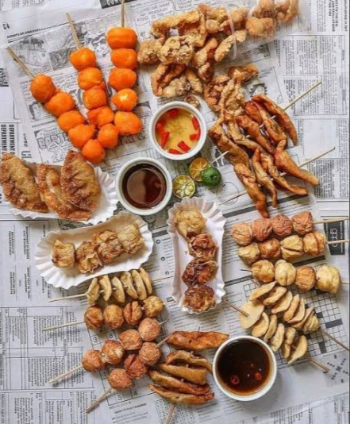

A PEEK INTO OUR CORNER
A little
food for the eyes.
The snacks, the setup, the little details. This is where our kitchen gets to show off.

Photo from: https://www.facebook.com/unlalaalaminosph/posts/street-foods-filipino-street-food-includes-isaw-balut-squid-balls-and-proven-the/1656770899807641/
THE PHOTO WALL
Fresh from
our side.
Bawal mag-scroll nang gutom. Don’t say we didn’t warn you.
Pero go ahead and zoom in. We won't judge hehe.
Photo from: https://www.pinoyrecipe.net/tokneneng-recipe-a-famous-filipino-street-food/
Photo from: https://www.instagram.com/p/CTjguSslgkU/
Photo from: https://simplybakings.com/best-filipino-sawsawan/
Photo from: https://www.shutterstock.com/image-photo/claver-surigao-del-norte-philippines-may-2491451013?dd_referrer=https%3A%2F%2Fwww.google.com%2F
Photo from: https://businessmirror.com.ph/2025/10/26/enjoying-filipino-street-food-at-b-hotel-alabang/
Photo from: https://www.youtube.com/watch?v=ylVEQb3wbKQ